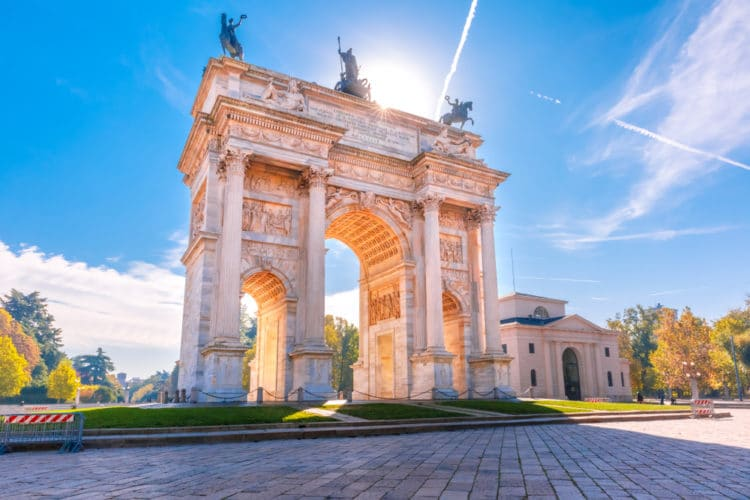
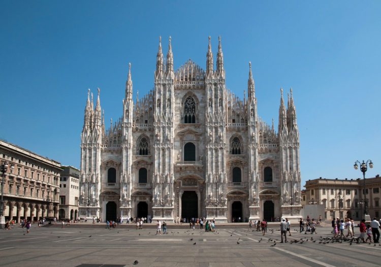
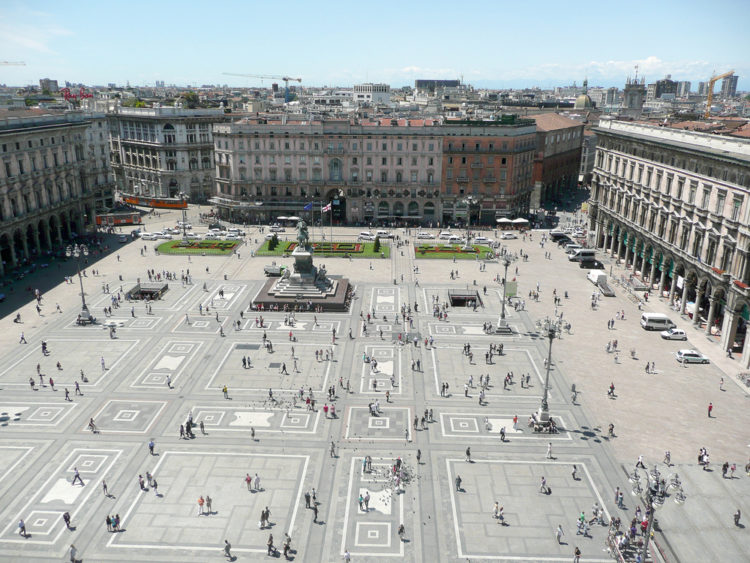
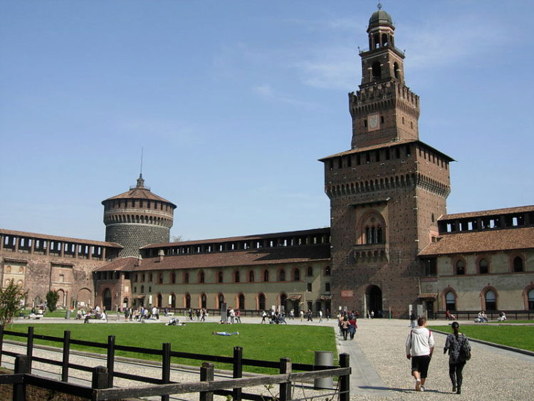
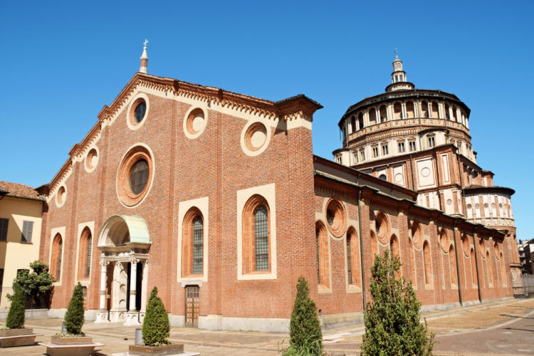
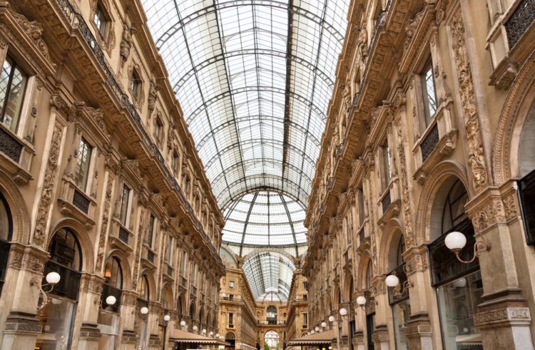
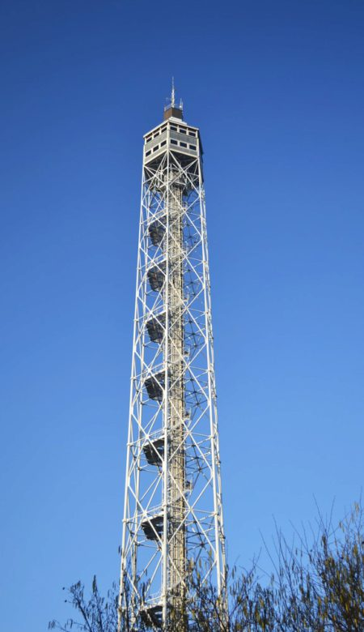
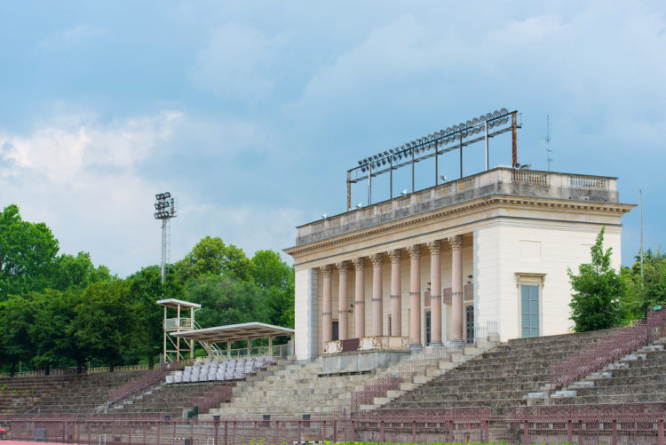
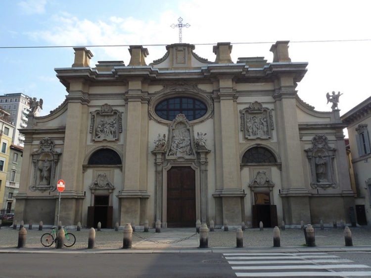
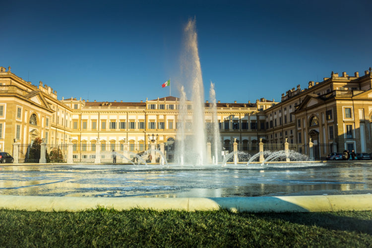

Тур в Милан
Составляя свой рейтинг «наиболее интересные места Милана», мы принимали в расчет отзывы опытных гидов и самих итальянцев.
Что посмотреть в Милане в первую очередь?
1. Миланский собор
Прекрасный миланский храм входит во все списки “главные достопримечательности Италии“. Сравнить его можно с изящной и в то же время монументальной мраморной скалой, возвышающейся над всем городом. Архитектурный стиль здания, на строительство второго ушло 5 столетий, готика. Одновременно собор может вместить внутри себя до 40 000 гостей. Здесь можно увидеть средневековые витражи, мощные колонны и необычно высокие потолки. Если вы не хотите осматривать «восьмое чудо света» изнутри, приезжайте полюбоваться его величественным внешним обликом: стены из белого мрамора декорированы тысячами скульптур, изображающими библейские сцены. На центральном шпиле собора находится статуя Богородицы с позолотой. Такие экскурсии в Милане нельзя оставлять без внимания.
2. Площадь Дуомо
Если вы не знаете, что посетить в Милане, приезжайте на его главную и наиболее известную Соборную площадь. Это исторический, общественный и географический центр города, на территории которого располагается множество ключевых достопримечательностей. В том числе, памятник Виктору Эммануилу Второму – первому правителю государства. Вы сможете прогуляться среди старинных построек, а также приобрести памятные сувениры.
3. Замок Сфорца
Самый знаменитый дворец города, возведенный в 15 столетии. Сравнить его по внешнему виду можно со столичным Кремлем: форма зубцов на стенах и башен аналогичная. Чем можно объяснить такое поразительное сходство? Тем, что московский Кремль был создан по образу этого миланского замка. Внутри Кастелло-Сфорцеско хранятся бесценные предметы: редкие музыкальные инструменты, уникальные скульптуры и полотна (в том числе картины да Винчи) и бюсты прославленных итальянцев.
4. Санта-Мария-делле-Грацие
Храм 15 века, внутри которого находится «Тайная вечеря» - легендарная фреска работы да Винчи, высотой более 4,5 метров и длинной около 9 метров. Прославленный гений изобразил Христа и апостолов в полный рост. Благодаря тому, что фреска была выставлена в монастырской трапезной, у монахов, которые собирались за столом для принятия пищи, создавалось ощущение, что герои вечери находятся рядом с ними.
5. Галерея Виктора Эммануила II
Прекрасный тоннель, который соединяет Соборную площадь и площадь театра Ла Скала. Официальное открытие прохода состоялось в конце 19 столетия. Название галереи было дано в честь первого короля Италии, присутствовавшего на торжественном мероприятии. Конструкция, богато декорированная скульптурами и мозаикой, имеет форму креста, у каждой из окончаний которого есть собственный вход.
6. Королевский дворец
.jpg)
Что посетить в Милане поклонникам архитектуры и истории? Эту резиденцию королей: в настоящее время она расположила на своей огромной территории храм Королевского дворца, соборный музей с редкими экспонатами и культурный центр. Все желающие могут прогуливаться по шикарным залам и рассматривать раритетные интерьеры. Даже лучшие отели в Милане не могут похвастаться столь же роскошным видом.
7. Башня Бранка
Конструкция 1933 года, целиком созданная из сияющих металлических труб и располагающаяся в центральной части города. Интересный факт, который любят рассказывать о сооружении все гиды в Милане: на постройку стальной башни, высотой немногим менее 110 метров, ушло всего 3 месяца. Мы рекомендуем вам осмотреть этот объект даже в том случае, если ваша поездка в Италию непродолжительная.
8. Арена Чивика
Самый первый стадион страны, который был возведен в начале 19 века по указанию Наполеона. За образец архитектор Чивики взял амфитеатры древнего Рима. На проведение строительных работ ушло всего два года. Если вы любите спорт, то посещать такие достопримечательности Милана вам следует обязательно.
9. Санта Мария делла Пассьоне
Храм, созданный по указанию епископа Бираго, располагается в центральной части города, и по своим габаритам может сравниться с Кафедральным собором. Изначально, величественное здание должно было иметь форму греческого креста. Однако впоследствии к центру объекта присоединили несколько прекрасных нефов. Наиболее замечательным элементом делла Пассьоне принято считать огромный купол с многоугольником в основании. Фасадную часть сооружения декорировали скульптурными группами, интерьер украшен полотнами прославленных художников и древними фресками. Этот собор – один из лучших вариантов того, что посмотреть в Милане за 1 день.
10. Королевская вилла Монцы
Строительство исторической виллы продолжалось в течение трех лет, начиная с 1777 года. Здание располагается в регионе Ломбардия, и изначально должно было быть символом величия Габсбургов и домом для австрийского эрцгерцога Фердинанда. Сегодня это одна из самых посещаемых и прекрасных архитектурных достопримечательностей города.